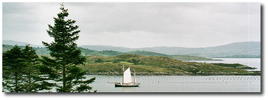
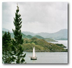
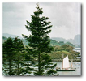
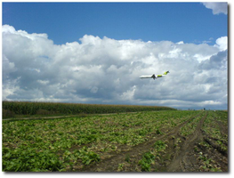
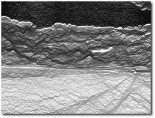
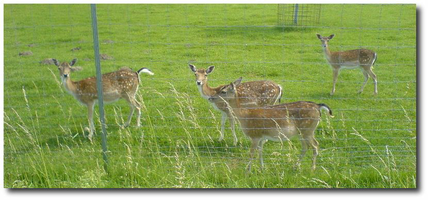
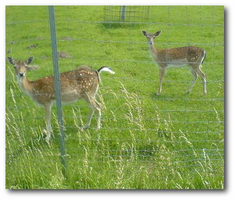
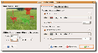

Seam Carving
Dieser Artikel wurde für die folgenden Ubuntu-Versionen getestet:
Ubuntu 14.04 Trusty Tahr
Zum Verständnis dieses Artikels sind folgende Seiten hilfreich:
Wer kennt es nicht? Da hat man die schönen Urlaubsbilder von der Digitalkamera heruntergeladen und sieht, dass ein Großteil eines Bildes eigentlich nicht wichtig ist und man es für die Bearbeitung aber erst umständlich selbst zurechtschneiden müsste. Nun gibt es ein neues, intelligentes Bildskalierungsverfahren namens "Seam Carving" (PDF-Datei  ), das hier Abhilfe schaffen soll.
), das hier Abhilfe schaffen soll.
Einleitung¶
Entwickelt wurde das Verfahren von Ariel Shamir und Shai Avidan, um Bilder in eine Richtung verkleinern oder auch vergrößern zu können. Dies geht natürlich auch schon jetzt in herkömmlichen Bildbearbeitungsprogrammen, nur werden hierbei die einzelnen Pixelreihen einfach nur zusammen geschoben und daraus ein neuer Bildpunkt berechnet.
|  |
| Originalbild |
|  |
| Skalierung auf 50% Breite |
|  |
| Skalierung auf 50% Breite mit Seam Carving |
Das führt dazu, dass alle Objekte im Bild ebenfalls ihr ursprüngliches Höhen-/Breitenverhältnis verlieren. Dagegen staucht "Seam Carving" die Bilder nicht einfach, sondern entfernt nur "ähnliche" Bildpunkte in eine Richtung und umgeht so Objekte, die sich vom (meist gleichförmigen) Hintergrund abheben. Dies nennt sich dann "Content-Aware Image Resizing". Zusätzlich kann man Bereiche angeben, die gesperrt sind und definitiv nicht entfernt werden sollen. Ebenso kann man Bereiche angeben, auf die beim Entfernen keine Rücksicht genommen werden muss.
Je nach dem, ob man ein Bild in der Höhe oder Breite verändern will, wird vertikal oder horizontal ein Pfad ("Seam") mit minimaler Energie durch das Bild gesucht. Diese Pixel werden dann beim Verkleinern entfernt. Das bedeutet grob gesagt, es wird der Weg des geringsten Widerstandes gegangen und dieser entfernt, so dass das Bild, eine Pixelreihe oder -spalte kleiner ist. So wird fortgefahren, bis das Bild die neue Größe erreicht hat und genug Pixelreihen oder -spalten entfernt wurden. Beim Hinzufügen geht man den umgekehrten Weg und fügt die Bildpunkte des Pfades ein, den man normalerweise entfernen würde.
Hintergrund¶
Wie funktioniert das Verfahren nun genau? Die Idee ist es, Pixel mit minimaler Energie aus einem Bild zu entfernen. Neben der Energiefunktion, zu der es verschiedene Ansätze gibt, gibt es auch verschiedene Strategien, wie man Pixel entfernt:
Man durchsucht das ganze Bild und entfernt alle Pixel mit minimaler Energie. Das Problem ist dann, dass man pro Zeile oder Spalte nicht mehr die gleiche Anzahl von Pixel haben muss.
Man entfernt Pixel mit minimaler Energie, achtet aber darauf, dass man pro Zeile bzw. Spalte die gleiche Anzahl von Pixeln entfernt. Das Bild hat am Ende zwar eine Rechteckgestalt, der Inhalt ist aber verschoben und nicht mehr erkennbar.
Man sucht eine durchgehende Spalte oder Reihe mit minimaler Energie und entfernt diese. Dies kann zu Artefakten und Sprüngen im Bild führen, wenn wichtige Teile eines Objektes verschwinden.
Die Optimallösung ist es, einen zusammenhängenden Pfad mit minimaler Energie durch das Bild zu suchen, so dass pro Spalte bzw. Reihe die gleiche Anzahl von Bildpunkten entfernt werden.
|  |
| Originalbild |
|  |
| Horizontale Seams (minimale Energie = schwarz) |
Im zweiten Bild oben sind die einzelnen horizontalen Seams dargestellt, wobei Pixel mit minimaler Energie schwarz eingefärbt sind und solche mit maximaler Energie weiß. Wie man gut erkennt, wird dementsprechend bei einer vertikalen Skalierung zuerst der Himmel entfernt werden, danach die Wolken, dann der Acker und zum Schluss das Flugzeug. Das bedeutet also, dass das Flugzeug als wichtiges Objekt erkannt wurde und bei einer Skalierung erhalten bleibt. Das Bild wurde mit mapseams von Arachne (siehe Links) erstellt.
Auf YouTube findet man ein Video  , welches das Verfahren anhand einiger Anwendungsbeispiele vorführt. Das Video gibt es auch als hochauflösende Version auf Ariel Shamirs Webseite.
, welches das Verfahren anhand einiger Anwendungsbeispiele vorführt. Das Video gibt es auch als hochauflösende Version auf Ariel Shamirs Webseite.
Anwendungsgebiete¶
Zugegeben, für die Verkleinerung privater Urlaubsbilder ist das Verfahren sicher nicht gedacht, kann aber auch hier schöne Effekte erzielen, vor allem wenn man ungewünschte Objekte beim Verkleinern entfernen will. Wozu benötigt man dies aber wirklich? Heute haben Fotografien fast immer ein Standardseitenverhältnis von 4:3. Dank Breitbildschirme und mobiler Geräte ist das 4:3-Format aber fast am Aussterben. Möchte man ein 4:3-Bild auf so einem Gerät anzeigen, hat man entweder schwarze Balken oder das Bild muss gestreckt/gestaucht werden und verliert damit das gewohnte 4:3-Verhältnis. Hierfür ist eine Objekt-erhaltende Verkleinerung sinnvoll. Zusätzlich ist es mit dem Verfahren möglich, so genannte "Multi-Size-Images" zu erstellen. Diese enthalten die Information der einzelnen Seams direkt im Bild und können daher dynamisch und schnell ihre Größe verändern.
Eine weitere Anwendung ist das gezielte Hervorheben von Bildinhalten, ohne die Bildgröße zu verändern. So kann man ein Bild erst mit normalen Skalierungsmethoden vergrößern und dann mittels "Seam Carving" verkleinern. Die Objekte auf dem Bild wirken dann größer als vorher. Auch das Entfernen von Objekten ist so möglich. Man markiert hierzu einen Bereich, der entfernt werden soll und aus dem Bild werden dann solange Seams entfernt, bis alle markierten Pixel verschwunden sind. Danach kann man per "Seam Carving" wieder Seams einfügen, um die Originalgröße des Bildes herzustellen.
|  |
| Originalbild |
|  |
| Skaliertes Bild |
Natürlich ist das Verfahren kein Allheilmittel und es gibt immer Bilder, bei denen die Ergebnisse nicht gut aussehen. Vor allem Bilder, in denen kein durchgängiger Seam gefunden wird, ohne ein wichtiges Objekt zu durchkreuzen, oder Bilder, die zu viele Bildinformationen haben, stellen ein Problem dar.
Benutzung¶
Inzwischen gibt es einige Implementierungen des Verfahrens. Für das Bildbearbeitungsprogramm GIMP gibt es ein Plugin namens Liquid Rescale , das die Technik einfach nutzbar macht.
Folgendes Paket muss installiert werden [1]:
gimp-plugin-registry
 mit apturl
mit apturl
Paketliste zum Kopieren:
sudo apt-get install gimp-plugin-registry
sudo aptitude install gimp-plugin-registry
 Nach einem Neustart von GIMP findet man das Plugin unter "Ebenen -> Liquid rescale...". Wer ein Bild einfach nur verkleinern möchte, braucht keinerlei Änderungen (bis auf die neue Bildgröße natürlich) vorzunehmen und kann sofort auf "OK" klicken.
Möchte man Bildbereiche sperren oder verwerfen, wählt man im Auswahlfenster unter "Feature preservation mask"/"Feature discard mask" die Option "new" aus, welche eine neue transparente Ebene erstellt. Auf dieser Ebene müssen die zu sperrenden oder zu verwerfenden Bildelemente ausgemalt werden. Es können mehrere Sperr-/Verwerfen-Ebenen erstellt werden.
Weitere Implementierungen¶
Es gibt noch viele weitere Implementierung (09/2007), unter anderem auch Online-Anwendungen, die das Verfahren umsetzen. Einige Umsetzungen sind aber nicht ganz optimal programmiert, so dass die Geschwindigkeit zu wünschen übrig lässt, einige Funktionen fehlen oder das Ergebnis keine hohe Qualität hat.
- Erstellt mit Inyoka
-
 2004 – 2017 ubuntuusers.de • Einige Rechte vorbehalten
2004 – 2017 ubuntuusers.de • Einige Rechte vorbehalten
Lizenz • Kontakt • Datenschutz • Impressum • Serverstatus -
Serverhousing gespendet von